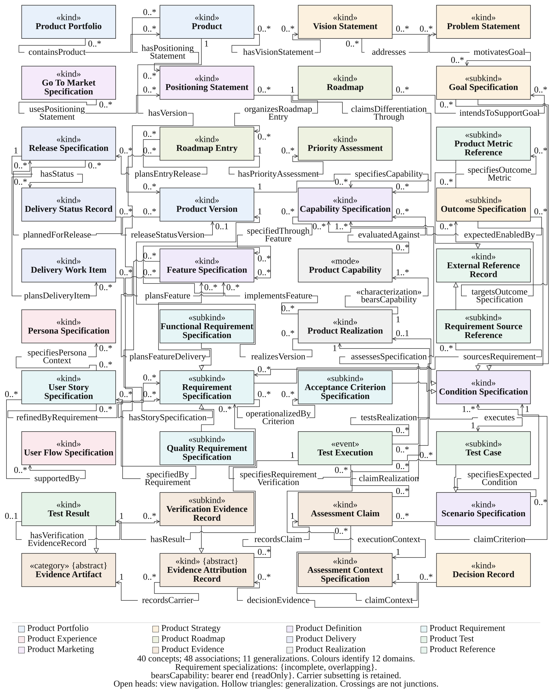

Software product knowledge, explicitly modeled
OntoSPK distinguishes continuing products, intended specifications, actual realizations and evidence about their use. Its twelve domains connect strategic and development knowledge with testing, delivery and product evidence.
Current distribution: 2.0.0-rc.1 — unreleased candidate. Local evaluation, public documentation deployment and independent scientific acceptance are separate states.
Understand the model
Read domain definitions, identity commitments and conceptual relations.
Read the guideUse the formal reference
Look up actual OWL declarations and asserted axioms.
Logical referenceSelected conceptual view
Forty selected concepts; the complete model and its external boundaries remain in the reference.

Explore the OWL view in WebVOWL · Related-ontology comparison · Downloads